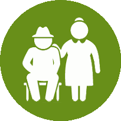

Find Resources

Senior Centers

Built by Coding for Impact, NYC Connector is a project which allows users to easily find and locate places near them where they can volunteer at, donate to, or find help at, such as soup kitchens, food pantries, SNAP centers, senior centers, food scrap drop-off sites, as well as clothing charities, and homeless shelters. Enter an address or zip code and select the places you want to see, and resources nearby will be displayed on the map. Click on a pinpoint marker to view information about the resource. It's as easy as that!
Coding for Impact is an international student-run organization that delivers
technological solutions to nonprofits and charities around the world.
Choose your volunteer interests by selecting checkboxes corresponding to a type of volunteer center. Enter a zip code, address, or name of a place to find volunteer centers near you.
Find relatable volunteer centers near your location by clicking Find or Use Current Location. Use the map to easily click and view pinpoint markers corresponding to volunteer centers. Click See Routes to see possible routes and times it would take to get to each place. View information about the volunteer center.
Start volunteering or donating and make an impact in your community!
NYC Connector was built in order to connect the thousands of charities, and community service centers based in New York City with the tens of thousands of teenagers and adults looking to give back to the community or find help. You would be surprised to see the number of service opportunities within a couple blocks of where you live. Built by Coding for Impact, a student-led club at Hunter College High School, NYC Connector aims to create a platform for connecting fringe, website-less and often contact-less charities to volunteers, as well as showing the plethora of service opportunities that exist in NYC.
Unlike most websites that connect volunteers to charities, NYC Connector combines a vast array of volunteer centers into one website. We utilized and combined the most comprehensive datasets in NYC, resulting in a wide array of resources to choose from. For all individuals looking to volunteer in NYC or find medical help or shelter, our self-built software allows for individuals to view specific resource centers near their address, as well as giving direct contact information. We hope to drive a positive impact in our community with this project, and hope that you are able to utilize this resource to its best.